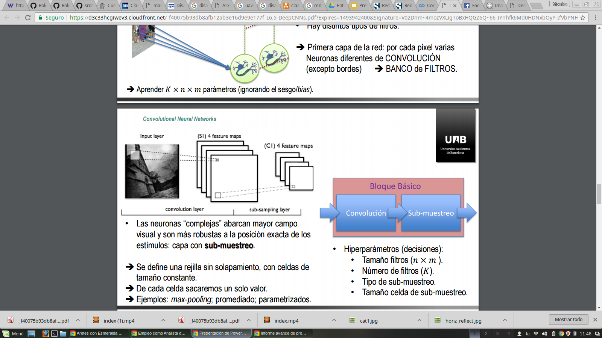
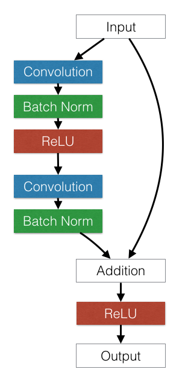

Detección de víctimas en desastres naturales mediante el uso de redes neuronales
Diego Clemente Rojas Chingate, Mónica Patricia Pineda Vargas, y Raúl Alfonso Ramírez Penagos
Departamento de Ingeniería de Sistemas e Industrial.
Universidad Nacional de Colombia
dicrojasch@unal.edu.co, mppinedav@unal.edu.co, raaramirezpe@unal.edu.co.
Resumen
Los vehículos aéreos no tripulados (UAV) por sus siglas en inglés, son equipos tecnológicos que brindan un apoyo muy importante a los equipos de búsqueda y rescate, en su objetivo de localizar víctimas rápidamente en el tipo de entorno que hay en un desastre natural. Explorando las diferentes propuestas hasta la fecha, los enfoques planteados en ocasiones pueden ser imprecisos, lentos o muy costosos. En este trabajo se realizó una clasificación de imágenes en escenarios de desastres naturales que en un futuro podrían representar imágenes captadas por UAVs, mediante el uso de redes neuronales convolucionales implementando técnicas como transfer learning de otros conjuntos de datos obteniendo resultados cercanos al 78% de precisión en la clasificación para el conjunto de prueba.
Palabras Clave —UAV,, CNN, ResNet, Imagenet, Transfer Learning
- Introducción
El principal objetivo después de un desastre natural es localizar la mayor cantidad de víctimas con vida, sin embargo lograr este objetivo implica actuar de manera rápida, ya que la probabilidad de encontrar personas con vida, es mayor en la medida que el tiempo que haya transcurrido sea menor. Esta finalidad sería imposible sin el apoyo de tecnologías que la faciliten, sin embargo, puede que los costos o imprecisiones de estas tecnologías las hagan inútiles o ineficientes si no hace una buena planeación.
El acierto de estas tecnologías puede mejorarse cuando estas son operadas por personas, pero aun sigue siendo poco eficiente con respecto al tiempo. La detección de víctimas humanas automatizada es una tarea muy compleja cuando el entorno es muy confuso, especialmente en el caso de desastres naturales. Se han desarrollado muchos procedimientos para lograr este objetivo de rescate, obtener previamente la ubicación de las víctimas es una gran ayuda para actuar eficientemente dado que el entorno de un desastre natural puede llegar a ser inmenso y habrá zonas que no pueden ser exploradas de manera ágil y rápida.
Entre los principales elementos tecnológicos desarrollados y usados para cumplir el objetivo anteriormente descrito, se encuentran los vehículos aéreos no tripulados (UAV) por sus siglas en inglés, que mediante diferentes tipos de sensores, cámaras o incluso antenas para emisión de ondas electromagnéticas, permite identificar desde el aire víctimas humanas. Otra tecnología relevante es el uso de ondas electromagnéticas pero desde antenas ubicadas en tierra.
Cuando se usan vehículos aéreos no tripulados equipados con cámaras para la obtención de imágenes, se pueden implementar sistemas que pueden ser en tiempo real. Los métodos usados para el análisis de estas imágenes se basan principalmente en técnicas inteligencia artificial como redes neuronales o machine learning como CNN(convolutional neural network ). También se encuentran implementaciones basadas en clasificadores de Haar, detectores de HOG (histogram of oriented gradients), algoritmo de Reed-Xiaoli, entre otros.
En este trabajo se buscó implementar un clasificador automático mediante el uso de Redes Neuronales Convolucionales que lograra separar imágenes de desastres que contienen personas de las que no. En el capítulo II se explica el problema a abordar, el capítulo III hace un acercamiento al estado del arte y algunas técnicas o métodos que se han usado anteriormente en este tipo de problemas. El capítulo IV explica la metodología abordada para afrontar el problema, los experimentos en el capítulo V y finalmente los resultados y conclusiones en los capítulos VI y VII respectivamente.
- Planteamiento del problema.
En escenarios post desastre, las imágenes capturadas presentan un fondo ruidoso que dificulta la detección de elementos tales como personas. Automatizar un clasificador que logre detectar aquellas imágenes tomadas en desastres naturales, podría reducir el tiempo de localización de víctimas especialmente en los lugares a los que es difícil acceder por los escombros, el lodo, etc., usando elementos tales como drones o UAVs que puedan sobrevolar la zona y hacer una captura de dichas imágenes.
- Antecedentes.
En los últimos años se han desarrollado una cantidad considerable de investigaciones y avances, relacionadas con la detección de personas, que incluye una serie de métodos que durante varios años se han mejorado. Uno de los principales métodos utilizados son la visión artificial, que incorpora el procesamiento y análisis de imágenes por computador.
La detección de personas después de un desastre natural, ha sido un campo de investigación importante y en la literatura hay investigaciones muy valiosas, que aportan significativos avances en este campo. Estas labores no solo incluyen tecnologías para el análisis de imágenes, comprende distintos métodos cuyas tecnologías pueden ser completamente diferentes.
Por lo general para este propósito se usa la ayuda de los UAV, los cuales sobrevuelan las zonas de interés y el reconocimiento de las víctimas es realizado por una persona, la cual observa las imágenes transmitidas por el UAV. Lo ideal es hacer que esta labor sea automatizada y efectiva aún cuando hayan inconvenientes de visualización, ya que, por lo general, las personas se encuentran en distintas posiciones en el suelo, o en posturas poco ideales para su reconocimiento inmediato[9]
A nivel general, para detección de víctimas, se ha tenido en cuenta el hecho de que existen parámetros físicos para la detección de una persona, como la voz, temperatura, respiración, movimiento, color de piel, rostro o la forma del cuerpo; para las cuales existen tecnologías que satisfacen la ubicación de personas usando dichos parámetros, generalmente por medio del uso de sensores. Lastimosamente algunas opciones son muy poco prácticas, como la ubicación por medio de la respiración, el sonido e incluso el movimiento, dado que para el reconocimiento las víctimas deben estar a una distancia corta y adecuada de los sensores respectivos, con lo cual su aplicación es más funcional solamente en los casos ideales.[9]
Para el caso de personas que se encuentran atrapadas bajo una superficie, se encuentran investigaciones basadas principalmente en el análisis de ondas electromagnéticas, generadas por antenas ubicadas en tierra como se plantea en [2] y [3]. o en antenas situadas en vehículos aéreos no tripulados como se propone en [4].
Cuando las víctimas de un desastre natural se encuentran sobre la superficie, hay métodos que brindan una detección más rápida; como por ejemplo, el análisis de imágenes. Este enfoque está constituido de muchos métodos.
En [5] se propone una detección en tiempo real donde un vehículo aéreo no tripulado, realiza una obtención de imágenes térmicas y a color, en la medida que estas imágenes son obtenidas, se determina si hay personas en la imagen, mediante técnicas como clasificadores de Haar apoyado de una distribución gaussiana multivariante. Un enfoque similar se aplica en [7], donde se procesan videos mediante técnicas de clasificadores de Haar junto con el algoritmo Viola-Jones. Una desventaja de usar cámaras térmicas o infrarrojas es que resultan muy caras y así mismo se hacen menos accesibles[9].
Un detector de HOG es básicamente un descriptor de la imagen que utiliza el gradiente en cada uno de los pixeles como información básica. En [8] se demuestra que un vehículo aéreo no tripulado que tome imágenes para ser analizadas mediante un detector de HOG, brinda unos resultados con tiempos de respuesta considerablemente buenos.
En un entorno más específico como los desiertos, es el campo abordado por [6] cuyo objetivo no es encontrar específicamente víctimas humanas, en este paper se busca detectar objetos que basado en su color, son inusuales en el entorno de un desierto, mediante una implementación del algoritmo RX (Reed-Xiaoli).
Hasta ahora se han mostrado algunas soluciones relacionadas con el problema a tratar, pero ninguna de ellas a abordado el tema desde la inteligencia artificial, más específicamente, desde las redes neuronales. Una solución muy interesante para el reconocimiento de personas y las actividades que estas realizan se estudia en [10], allí la idea es usar una CNN (red neuronal convolucional profunda), la cual se basa en conceptos de deep learning y aprendizaje automático. El objetivo es que la red pueda reconocer las características y realizar la clasificación con base a los datos que son directamente procesados, es decir, sin ningún tipo de entrenamiento.
El trabajo de investigación realizado por investigadores de Google, plantean en [12] una propuesta de detección de peatones en tiempo real, donde se basan en una DCNN complementada de un método de cascada de clasificadores, teniendo en cuenta que una DCNN a pesar de ofrecer una gran precisión puede llegar a tener tiempos notoriamente lentos para ofrecer respuesta en tiempo real, por lo cual estos clasificadores buscan optimizar estos tiempos. Los resultados obtenidos demuestran alta precisión y respuesta en tiempo real, posicionando este método como uno de los mejores en detección de patrones en tiempo real.
Particularmente la detección de víctimas en desastres naturales se plantea también mediante una DCNN en [11], pero en este caso aplica una metodología que incluye un entrenamiento de la red neuronal y cuyo conjunto de datos está basado principalmente en superficies en entornos desordenados y confusos, donde los resultados obtenidos son favorables y demuestran que podrían ser de gran utilidad para los equipos de búsqueda y rescate.
Una desventaja de usar las redes de aprendizaje supervisado es que, como estas requieren de un entrenamiento previo, puede que se cree un sesgo y puede generar malas clasificaciones en caso de enfrentarse a casos muy distintos a los estudiados[10]. Pero pese a esto, el aprendizaje supervisado ha tenido buenos resultados y esto se refleja en la cantidad de aplicaciones que tiene, por lo menos, en este contexto. Algo que se puede resaltar es el hecho de que, si bien los enfoques anteriores tiene aplicaciones a eventos en particular distintos entre ellos, un problema común de estos es la dificultad que se genera debido al entorno en el cual se encuentran las personas que se buscan identificar, ya sea en un área de derrumbe, inundación, avalanchas [16], un reto importante es la correcta clasificación.
Metodología.
- Generación del conjunto de datos
Al realizar una búsqueda en la red sobre bases de datos con imágenes de escenarios post desastres no se obtuvieron resultados. Por esta razón, el primer paso consistió en construir el conjunto de datos a partir de diferentes fuentes en internet. Este conjunto está conformado por fotografías tomadas luego de algún desastre, natural o provocado por el hombre. En algunas de estas imágenes hay presencia de humanos y en otras no. Para realizar la clasificación de las imágenes, se abordará una metodología de aprendizaje supervisado, por tanto las imágenes fueron clasificadas manualmente en dos clases. La clase 1 hace referencia a las imágenes que contienen alguna persona y la clase 0 las que no.
Se logró generar un dataset con 446 imágenes con y sin personas para el conjunto de entrenamiento, del cual el 20% se separó para el conjunto de validación. Adicionalmente se creó un dataset de test o clasificación con 100 imágenes de desastres con personas y 100 sin personas.
- Aumento del conjunto de datos
La técnica para abordar este problema es aprendizaje profundo mediante redes neuronales convolucionales. Al tratarse de deep learning, es necesario contar con un dataset de entrenamiento lo suficientemente grande para que la red no se aprenda los datos de memoria, es decir para evitar el sobreajuste de la red. El método más fácil y más común para reducir el sobreajuste en el entrenamiento es agrandar el conjunto de datos de forma artificial usando transformaciones de preservación de etiquetas (por ejemplo, [14, 15]). Para ello usamos un generador de imágenes artificiales que usa técnicas como reflexiones horizontales, verticales, rotaciones, cambios de canal RGB, entre otras para poder generar nuevas imágenes artificialmente a partir del conjunto de datos original.Sin esta técnica de aumento, el experimento estaría limitado a una red neuronal pequeña, de lo contrario una red profunda habría causado un sobreajuste de los datos.
- Preprocesamiento
Como se mencionó anteriormente, el conjunto de datos para el experimento fue construido a partir de diferentes imágenes de internet. El problema con esto, es que las imágenes no se encuentran unificadas, hay imágenes más grandes que otras y en la librería usada para construir las arquitecturas de red usadas para el entrenamiento y la clasificación en este experimento que se analizarán con detalle en el siguiente capítulo, la capa de entrada recibe tensores con la misma dimensionalidad. Un tensor es una matriz de tres dimensiones. Una dimensión definida por el ancho de la imagen, otra por el largo y la tercera dimensión por el canal de color. El orden de estas dimensiones está definido dependiendo si se usa theano o tensor flow.
Para no generar conflictos, todas las imágenes deben ajustarse a un tamaño específico, ya sean imágenes del conjunto de entrenamiento o del conjunto de clasificación. Todas las imágenes fueron ajustadas a un tamaño de 224 x 224 y son imágenes a color. De esta manera poseemos un tensor de entrada de (224, 224, 3) o (3, 224, 224) para cada imagen dependiendo si el experimento opera sobre Theano o Tensor Flow.
- Clasificación
Para realizar el entrenamiento y clasificación de las imágenes, se trabajará con redes neuronales convolucionales CNN, específicamente con redes neuronales residuales ResNet que han presentado muy buenos resultados realizando estas tareas de clasificación de imágenes [15, 17].
- Redes Neuronales Convolucionales
Las redes neuronales convolucionales son redes diseñadas para procesar especialmente datos estructurados en dos dimensiones como es el caso de las imágenes. Una de sus ventajas principales es que tiene menos parámetros a entrenar que las redes multicapa fully connected, lo que mejora los tiempos de entrenamiento [15].
Las CNN presentan una característica importante y es que estas aprenden los descriptores a partir de las imágenes. Inicialmente se puede pensar en la CNN como una caja negra que dadas unas imágenes de entrada nos proporciona unas clasificaciones como se observa en la Figura 1.
Estas redes surgen a partir del trabajo de Hubel y Wiesel [19] en donde analizaron las neuronas de la corteza visual de los gatos y realizaron una serie de observaciones que posteriormente se tradujeron en un modelo de red neuronal artificial para tareas de visión por computador. Dichas observaciones nos permiten entender mejor cómo funcionan las CNN.
- Cada neurona del córtex (nombrada por ellos como neurona simple) se responsabiliza de una pequeña región “bidimensional” del campo visual.
- Para cubrir todo el campo visual hay solapamiento.
- Las neuronas simples actúan como filtros locales basados en convolución
- El filtro se repite actuando localmente.
- Hay distintos tipos de filtros
- Las neuronas “complejas” abarcan mayor campo visual y son más robustas a la posición exacta de los estímulos: capa con sub-muestreo.
Con lo anterior, se puede dar una mejor definición de lo que es una CNN. Son redes neuronales compuestas por bloques de convolución en donde cada bloque está formado por una capa de convolución y una capa de subsampling o submuestreo. La entrada de una capa convolucional es un tensor de  donde m es el ancho y alto de la imagen y r el número de canales de color. Las capas de convolución están formadas por k filtros o kernels con dimensiones de que pueden variar entre todos los filtros. Cada kernel o filtro realiza una convolución generando un “feature maps” o mapas de características. A cada uno de estos mapas se realiza submuestreo con técnicas como “max pooling” o “mean pooling” sobre regiones que van de tamaño 2 a 5 pixeles.
donde m es el ancho y alto de la imagen y r el número de canales de color. Las capas de convolución están formadas por k filtros o kernels con dimensiones de que pueden variar entre todos los filtros. Cada kernel o filtro realiza una convolución generando un “feature maps” o mapas de características. A cada uno de estos mapas se realiza submuestreo con técnicas como “max pooling” o “mean pooling” sobre regiones que van de tamaño 2 a 5 pixeles.

La convolución es una operación que se realiza entre una imagen de entrada y un kernel que da como salida un mapa de características. La ventaja es que el mismo filtro sirve para extraer el mismo rasgo en cualquier parte de la imagen [15]. El pooling o agrupamiento reduce el número de rasgos o características usados en la clasificación, lo que permite reducir también el problema de sobreajuste.
Uno de los primeros trabajos que trató este tipo de problemas fue Yan LeCun en [18] en donde buscaba reconocer caracteres. Posteriormente en [15] se propone una arquitectura de red convolucional conocida actualmente como AlexNet, que fue precedida por la propuesta de Karen Simonyan y Andrew Zisserman en [20] quienes en 2015 lograron ser el estado del arte y ganar la competencia de clasificación en Imagenet en el 2014 con su VGGNet que inicia con 64 filtros en la primera capa a diferencia de AlexNet con 96.
- Redes Neuronales Residuales
Una red que tiene un equilibrio muy bueno entre la precisión y el tamaño del modelo es la Red Residual, ya que la red tiene la característica de que en lugar de aprender una función  que mapea las imágenes como entrada
que mapea las imágenes como entrada  , aprende una función de la forma +x que significa que la entrada puede saltar a capas profundas de la red permitiendo un entrenamiento más rápido, mejorando la precisión del modelo.
, aprende una función de la forma +x que significa que la entrada puede saltar a capas profundas de la red permitiendo un entrenamiento más rápido, mejorando la precisión del modelo.
La siguiente imagen muestra un bloque básico de una red Residual.

Figura 1. Bloque red Residual
Como se puede observar en la Figura 1, la clave está en la adición, una capa que realiza una suma entre dos vectores, la entrada del bloque, y la salida luego de realizar dos operaciones de convolución.
Para el experimento, se usó ResNet50, una red residual que posee 50 capas de profundidad distribuidas en bloques como el presentado en la Figura 1.
- Transfer Learning
Lo que se busca con esta técnica es que el modelo pueda reutilizar el conocimiento derivado de una tarea similar como un fuerte sesgo y un buen punto de partida que ayuda a entrenar los modelos más rápido y a menudo puede mejorar la precisión del modelo final. El dataset más usado actualmente para procesamiento de imágenes es Imagent [15], por tanto aprovecharemos el aprendizaje generado por este dataset en ResNet50 y será transferido a nuestro problema de clasificación.
Experimentación.
Los experimentos planteados y ejecutados en este proyecto son hechos mediante la librería Keras de Python. Keras provee un API para deep learning que facilita los experimentos de redes neuronales, brindando una mayor facilidad en la codificación del modelo al igual que una ejecución más rápida.
Los experimentos planteados tienen como base el modelo Resnet, cuya implementación viene incluida en Keras. Específicamente se utilizó el modelo Resnet50, esta es una red neuronal residual cuya arquitectura está compuesta de 50 capas, no requiere una cantidad gran cantidad de parámetros y ha sido un modelo que ha ganado muchas competencias de clasificación de imágenes [17].
- ResNet50 inicializada con pesos aleatorios
Para este caso se entrenó toda la red neuronal con nuestro dataset de desastres, donde la inicialización de los pesos de todas las neuronas de la red son asignados aleatoriamente. Además de las 50 capas que componen la arquitectura de Resnet50, se agregan 3 capas correspondientes al clasificador.
- ResNet50 usando transfer learning de Imagenet
Para este caso se inicializa la red con los pesos de Imagenet predefinidos en Keras y fueron calculados mediante Resnet50 usando el dataset de Imagenet. Al igual que en el primer experimento, después de estas capas de Resnet50 se agregan 3 capas correspondientes al clasificador. El entrenamiento de este experimento se divide en dos partes:
- Entrenamiento con pesos congelados: Se ejecuta el entrenamiento usando nuestro dataset de desastres manteniendo estáticos los pesos de las capas de Resnet previamente inicializada con los pesos de Imagenet, permitiendo usar el conocimiento previo de una tarea similar y entrenar a un clasificador con dicho conocimiento.
- Entrenamiento con pesos no congelados: Una vez que el clasificador no mejora más con los pesos de Imagenet, se procede a descongelar los pesos, permitiendo realizar otro nuevo entrenamiento con nuestro dataset de desastres, en el que todos los pesos de la red convolucional se actualicen en un proceso llamado fine-tunning de Pesos con el objetivo de especializar la red para nuestra tarea. Esta fase está destinada a ajustar la red neural específicamente para nuestro problema de clasificación.
- ResNet50 inicializada con los pesos de
Imagenet y entrenada con INRIA
El tercer experimento se parte de una red neuronal creada bajo el modelo de Resnet50 y al igual que en el segundo experimento se inicializan con los pesos de Imagenet, posteriormente este experimento se divide en dos partes, donde cada parte repite básicamente el mismo procedimiento del segundo experimento, de la siguiente manera:
- En la primera parte se agregan tres capas de clasificación, después se congelan todas las capas de Resnet50 y se inicia el entrenamiento con el dataset de imágenes de personas INRIA. Posteriormente cuando termina el entrenamiento anterior se descongelan todas las capas de la red neuronal y se entrena nuevamente.
- En la segunda parte se agregan otras tres capas de clasificación, después se congelan todas las capas del modelo hasta el momento, sin incluir las 3 últimas capas y se inicia el entrenamiento con nuestro dataset de desastres. Posteriormente cuando termina el entrenamiento anterior se descongelan todas las capas de la red neuronal y se entrena nuevamente.
Resultados.
En la Tabla 1 se presenta la matriz de confusión para el experimento de ResNet50 con los pesos aleatorios. Se puede observar que la clasificación para las imágenes sin personas está por debajo del 50%, lo cual es un resultado poco favorable. Para la clase con personas, el 68% de las imágenes fue clasificado correctamente.
Matriz de confusión. Pesos Aleatorios |
| Sin Personas | Con Personas |
Sin Personas | 47 | 53 |
Con Personas | 32 | 68 |
Tabla 1: Matriz de confusión ResNet50 con pesos aleatorios
El segundo experimento presenta los mejores resultados, con un total de 92% de imágenes bien clasificadas en las que se encontraban personas, sin embargo para la clase 0 o sin personas, el 43% de las imágenes fue clasificada incorrectamente.
Matriz de confusión. Pesos Imagenet |
| Sin Personas | Con Personas |
Sin Personas | 57 | 43 |
Con Personas | 8 | 92 |
Tabla 2: Matriz de confusión ResNet50 con Imagenet
El modelo del último experimento logró clasificar correctamente 83% de las imágenes con personas y el 63% de las imágenes sin personas. Este modelo presenta el mejor resultado para la clasificación de la clase 0 que corresponde a las imágenes que no contienen personas.
Matriz de confusión. Pesos Imagenet e INRIA |
| Sin Personas | Con Personas |
Sin Personas | 63 | 37 |
Con Personas | 17 | 83 |
Tabla 3: Matriz de confusión ResNet50 con pesos de Imagenet e INRIA
A simple vista con las matrices de confusión se podría decir que el mejor resultado lo presenta el modelo del segundo experimento. Para corroborar esta afirmación se compararon los tres modelos con métricas como Precision, recall y f1-score, los valores de estas métricas para cada modelo se presentan en la siguiente tabla:
Modelo | Precision | Recall | f1-score |
Pesos Aleatorios | 0.58 | 0.57 | 0.57 |
Imagenet | 0.78 | 0.74 | 0.74 |
Imagenet+ INRIA | 0.74 | 0.73 | 0.73 |
Tabla 4: Métricas para los modelos
Se puede observar que la mejor precisión se presenta en el segundo experimento, usando transfer learning con el dataset de Imagenet, que logró un 78% de precisión en la clasificación, de igual forma obtuvo los mejores resultados para recall y f1-score con un 74%.
Conclusiones.
Transfer learning resultó ser una buena metodología para realizar esta tarea, logrando un acierto de 92% para la detección de imágenes que contienen personas. Si bien la clasificación para la clase 0 que corresponde a imágenes sin personas no resultó tan buena, cabe mencionar que por lo que puede llegar a abordar esta solución, es prioridad alcanzar una buena clasificación de la clase 1 ya que al llevar a cabo el experimento en la realidad, podría reducir el tiempo de detectar una víctima en medio de una emergencia.
A pesar de contar con un conjunto de entrenamiento reducido y el escenario de ruido que contienen las imágenes, se logró una buena clasificación de imágenes con personas.
Recomendaciones.
En los diferentes experimentos que se llevaron a cabo, pudimos observar que aumentar el dataset original mejoraba el acierto en la clasificación. Por esta razón cabe la posibilidad que estos resultados puedan mejorar si se logra aumentar el conjunto de entrenamiento.
Referencias
- P. Blondel, A. Potelle, C. Pgard, and R. Lozano, “Human detection in uncluttered environments: From ground to uav view,” in ICARCV, Dec 2014, pp. 76–81.
- L. B. Liu, M. Liu, J. Q. Wang, “Electromagnetic environment comprehension for radar detection of vital signs at china national training center for earthquake search and rescue”, in 16th International conference of ground penetrating radar, 2016.
- Zhang, Y., Chen, F., Xue, H., Li, Z., An, Q., Wang, J., & Zhang, Y. (2016). “Detection and identification of multiple stationary human targets via bio-radar based on the cross-correlation method”. Sensors, 16(11), 1793.
- Inata, H., Say, S., Ando, T., Liu, J., & Shimamoto, S. (2016, April). “Unmanned aerial vehicle based missing people detection system employing phased array antenna”. In Wireless Communications and Networking Conference Workshops (WCNCW), 2016 IEEE (pp. 222-227). IEEE.
- Gaszczak, A., Breckon, T. P., & Han, J. (2011, January). “Real-time people and vehicle detection from UAV imagery”. In IS&T/SPIE Electronic Imaging (pp. 78780B-78780B). International Society for Optics and Photonics.
- Proft, J., Suarez, J., & Murphy, R. (2015, November). “Spectral anomaly detection with machine learning for wilderness search and rescue”. In MIT Undergraduate Research Technology Conference (URTC), IEEE (pp. 1-3). IEEE.
- De Cubber, G., & Marton, G. (2009, January). “Human victim detection”. In Third International Workshop on Robotics for risky interventions and Environmental Surveillance-Maintenance, RISE.
- Blondel, P., Potelle, A., Pégard, C., & Lozano, R. (2014, December). “Human detection in uncluttered environments: From ground to UAV view”. In Control Automation Robotics & Vision (ICARCV), 2014 13th International Conference on (pp. 76-81). IEEE.
- Cubber , G. Marton, “Human Victim Detection”
- Y. Kim, “Human Detection and Activity Classification Based on Micro-Doppler Signatures Using Deep Convolutional Neural Networks”, 2016.
- Sulistijono, I. A., & Risnumawan, A. (2016, September). “From concrete to abstract: Multilayer neural networks for disaster victims detection”. In Electronics Symposium (IES), 2016 International (pp. 93-98). IEEE.
- Angelova, A., Krizhevsky, A., Vanhoucke, V., Ogale, A. S., & Ferguson, D. (2015, September). “Real-Time Pedestrian Detection with Deep Network Cascades”. In BMVC (pp. 32-1).
- P.Y. Simard, D. Steinkraus, and J.C. Platt. Best practices for convolutional neural networks applied to visual document analysis. In Proceedings of the Seventh International Conference on Document Analysis and Recognition, volume 2, pages 958–962, 2003.
- D.C. Cire¸san, U. Meier, J. Masci, L.M. Gambardella, and J. Schmidhuber. High-performance neural networks for visual object classification. Arxiv preprint arXiv:1102.0183, 2011
- Krizhevsky A., Sutskever I., and Hinton G.. 2012. ImageNet classification with deep convolutional neural networks. In Proceedings of the 25th International Conference on Neural Information Processing Systems (NIPS'12), F. Pereira, C. J. C. Burges, L. Bottou, and K. Q. Weinberger (Eds.). Curran Associates Inc., , USA, 1097-1105.
- Mesay B. Abdallah Z, . Abdelhamid N., Farid M, 2016,“A Convolutional Neural Network Approach for Assisting Avalanche Search and Rescue Operations with UAV Imagery”.
- He K., Zhang X., Ren S. and Sun J. Deep Residual Learning for Image Recognition. Computer Vision and Pattern Recognition (CVPR), 2016 IEEE Conference.
- Y. LeCun, L. Bottou, Y. Bengio and P. Haffner: Gradient-Based Learning Applied to Document Recognition, Proceedings of the IEEE, 86(11):2278-2324, November 1998,
- Hubel D, Wiesel T. Receptive fields of single neurones in the cat's striate cortex. J Physiol. 1959 Oct;148:574–591.
- Simonyan K., Zisserman A. Very Deep Convolutional Networks for Large-Scale Image Recognition. Computer Vision and Pattern Recognition (cs.CV). 10 Apr 2015